การสร้างเกม Digital Bingo สำหรับบอร์ด Micro:bit#
Keywords: BBC Micro:bit, Microsoft MakeCode, TypeScript, Wireless Data Communication, 2.4GHz Radio Interface, Event-Driven Programming, Digital Bingo Game
▷ บอร์ดไมโครบิตและการสื่อสารข้อมูลแบบไร้สาย#
บอร์ดไมโครคอนโทรลเลอร์ "ไมโครบิต" (Micro:bit) ทั้งรุ่นแรกและรุ่นที่สอง (v1 & v2) สามารถรับส่งข้อมูลและสื่อสารกันได้แบบไร้สาย (Wireless Data Communication) เนื่องจากใช้ชิปของบริษัท Nordic Semiconductor รุ่น nRF51822 และ nRF52833 ตามลำดับ ภายในชิปมีวงจรและเฟิร์มแวร์สำหรับการสื่อสารข้อมูลไร้สายด้วยคลื่นวิทยุย่านความถี่ 2.4GHz และรองรับโพรโตคอล Bluetooth / BLE ด้วย
บทความนี้นำเสนอตัวอย่างการเขียนโค้ดด้วย MakeCode JavaScript (JS) หรือ Static TypeScript (STS) เพื่อรับส่งข้อมูลระหว่างบอร์ดไมโครบิต 2 บอร์ด และสาธิตการสร้างเกมที่มีชื่อว่า Digital Bingo
ซอฟต์แวร์ที่ใช้คือ เว็บเบราว์เซอร์ เช่น Google Chrome และ Web App ที่มีชื่อว่า MakeCode Editor for Micro:bit (https://makecode.microbit.org/) รองรับการเขียนโค้ดหลายรูปแบบ ทั้งแบบการต่อบล็อก (Block-based Coding) และการเขียนโค้ดด้วยภาษา JavaScript (JS) / Static TypeScript หรือ Python อีกทั้งยังสามารถจำลองการทำงานของโค้ดได้ (MakeCode Micro:bit Simulator) โดยยังไม่จำเป็นต้องใช้งานบอร์ดทดลองจริง
จุดเด่นของซอฟต์แวร์อีกประการหนึ่งคือ ความสามารถในการแปลงให้เป็นโปรแกรมในรูปแบบการต่อบล็อก หรือสลับไปมาระหว่างโหมดการเขียนโค้ดด้วยภาษา JS / Python ได้โดยอัตโนมัติ
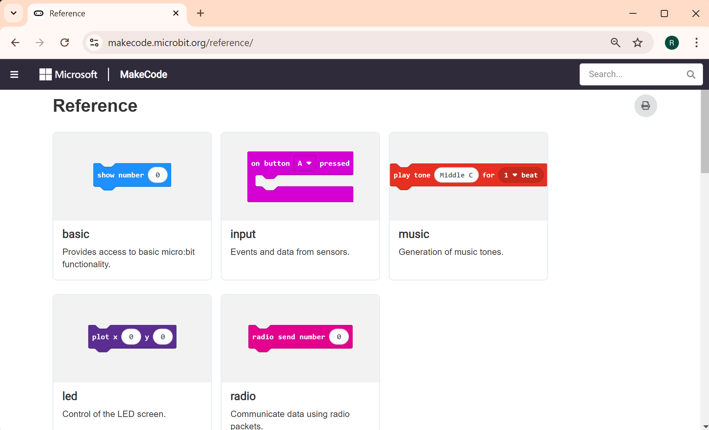
รูป: คำสั่งแบ่งตามกลุ่มสำหรับการเขียนโค้ดด้วย MakeCode (https://makecode.microbit.org/reference/)
▷ การใช้งาน Multi-Board Editor#
เนื่องจากจะต้องใช้บอร์ดไมโครบิต 2 จำนวนบอร์ด และทำงานพร้อม ๆ กัน ดังนั้นถ้าจะจำลองการทำงานของบอร์ดทั้งสอง จะต้องเปิดใช้งาน Multi-Board Editor (https://makecode.com/multi#)
ผู้ใช้สามารถสร้างโปรเจกต์ (กดปุ่ม "New Project") แยกกันระหว่าง 2 บอร์ดที่จะใช้งาน แล้วเปิดโปรเจกต์ใน Editor ในส่วนการทำงานทางด้านซ้ายมือ และขวามือตามลำดับ
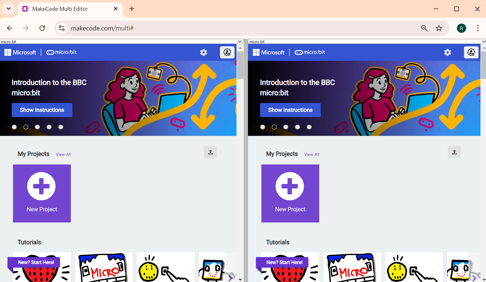
รูป: MakeCode Multi-Board Editor
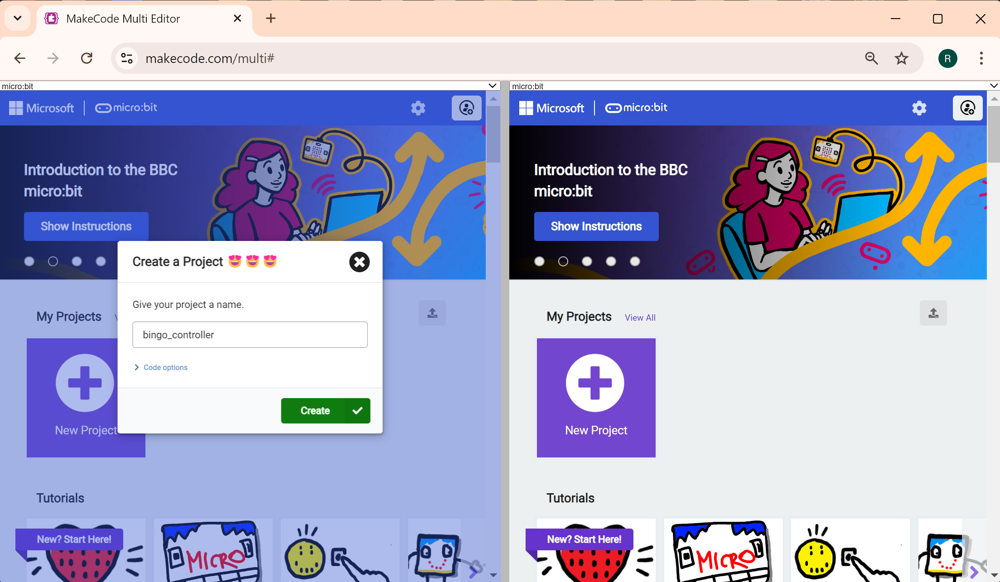
รูป: การสร้างโปรเจกต์ใหม่ เพื่อใช้กับบอร์ด Bingo Controller
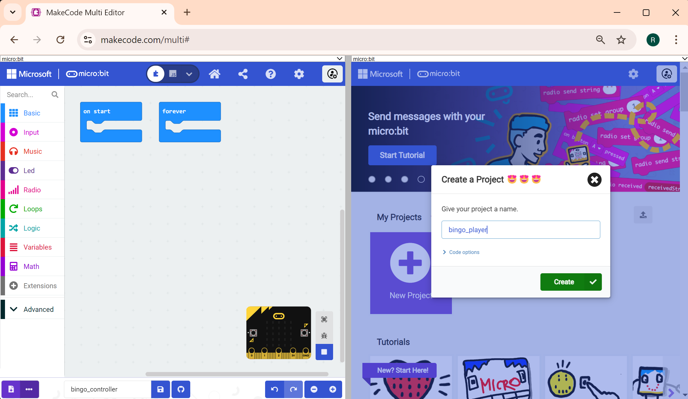
รูป: การสร้างโปรเจกต์ใหม่ เพื่อใช้กับบอร์ด Bingo Player
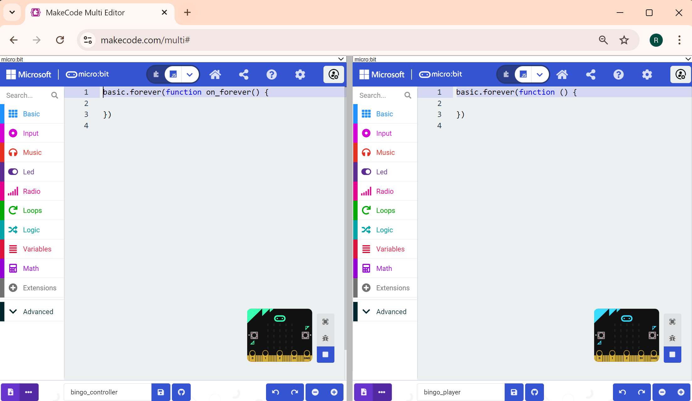
รูป: การเลือกโหมดการเขียนโค้ดให้เป็น JavaScript (JS) แทนการต่อบล็อก
▷ ตัวอย่างโค้ดสาธิต Digital Bingo#
การทำงานของโค้ดตัวอย่างในบทความนี้ มีลักษณะการทำงานดังนี้
- ใช้บอร์ด Micro:bit จำนวน 2 บอร์ด แบ่งเป็นโค้ดสำหรับ Bingo Controller และ Bingo Player
- การทำงานของ Bingo Player:
- เมื่อเริ่มต้นทำงาน ให้สุ่มเลขสำหรับเซตที่มีตัวเลขจำนวนเต็ม จำนวน 25 ตัวเลข อยู่ระหว่าง 0 ถึง 24 และไม่ซ้ำกัน ค่าตัวเลขแต่ละตัว จะถูกนำไปแปลงเป็นพิกัด (x,y) บน LED Matrix ขนาด 5x5 ถ้า คือ ค่าตัวเลข ก็ให้แปลงเป็น (หารแบบเหลือเศษ หรือ Modulo) และ (การหารแบบปัดเศษทิ้ง)
- รอให้มีการกด Button A หรือ เขย่าบอร์ดหนึ่งครั้ง (Shake) ถ้าเป็นเขย่าบอร์ด ก็จะเริ่มต้นดึงตัวเลขออกมาจากเซตหรือรายการ โดยต่อเนื่องและอัตโนมัติ แล้วส่งไปยังบอร์ด Bingo Player ทีละตัว เว้นระยะเวลา แล้วทำซ้ำไปจนครบตามจำนวนที่ตั้งไว้ เช่น 15 ตัว
- แต่ถ้าเป็นการกดปุ่ม Button A จะนำค่าตัวเลขในตำแหน่งแรกออกมาใช้เพียงหนึ่งตัว แล้วส่งไปยังบอร์ด Bingo Player ถ้าจะใช้ตัวเลขถัดไป ต้องกดปุ่มอีกครั้ง ไม่ทำโดยต่อเนื่องอัตโนมัติ
- ถ้าส่งตัวเลขไปจนครบตามจำนวนแล้ว ก็ให้โปรแกรมเริ่มต้นการทำงานใหม่ โดยทำคำสั่งของฟังก์ชัน
resetGame()และส่งตัวเลขที่มีค่า -1 ไปยังอีกบอร์ดหนึ่ง เพื่อแจ้งให้ทราบว่า เป็นการเริ่มต้นใหม่
- การทำงานของ Bingo Player:
- เมื่อเริ่มต้นทำงาน ให้สุ่มเลขจำนวนสำหรับเซตที่มีตัวเลขจำนวนเต็ม จำนวน 25 ตัวเลข เหมือนกรณีของ Bingo Controller
- เมื่อได้รับค่าตัวเลข มาแล้วก็ให้ตรวจสอบกับตัวเลขที่มีอยู่ว่า ตรงกับตำแหน่งใด แล้วเปลี่ยนสถานะของ LED ในตำแหน่ง (x,y) ที่เกี่ยวข้องกับตัวเลขดังกล่าว ให้อยู่ในสถานะ ON
- นอกจากนั้นแล้ว เมื่อได้รับตัวเลขและอัปเดตสถานะของ LED Matrix แล้ว จะต้องมีการตรวจสอบเงื่อนไข สำหรับ BINGO ด้วย กล่าวคือ มี LED อยู่ในสถานะ ON เต็มหนึ่งแถวแนวนอนหรือแนวตั้ง หรือแนวทแยงมุมหรือไม่ ถ้าใช่ แสดงว่า BINGO
- ในกรณี BINGO จะกระพริบ LED Matrix และส่งข้อความ
BINGOไปยังอีกบอร์ดหนึ่งด้วย ก่อนที่จะรอคำสั่งเริ่มต้นใหม่
ลองดูตัวอย่างของตัวเลขทั้งหมด 25 ตัว ได้จากการสุ่มตัวเลข และแสดงให้อยู่ในรูปของเมทริกซ์ ซ้ายมือสำหรับ Bingo Controller และขวามือสำหรับ Bingo Player ตามลำดับ
ในการเลือกค่าตัวเลขในเมทริกซ์ทางซ้ายมือ จะทำจากแถวบนจากซ้ายไปขวา (ถ้าครบแถวก็ให้ขึ้นแถวใหม่) เลือกมาทีละตัว ไปตามลำดับ แต่จะไม่เกินจำนวนที่กำหนดไว้ เช่น 15
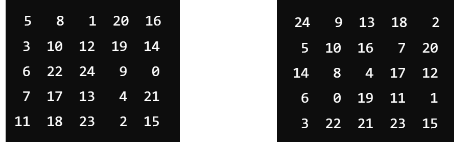
รูป: ตัวอย่างตัวเลขที่ได้จากการสุ่มในสถานะเริ่มต้น (ทางซ้ายมือเป็นของ Bingo Controller ทางขวามือเป็นของ Bingo Player)
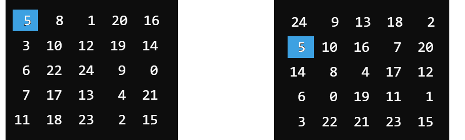
รูป: เมื่อเลือกค่าตัวเลขตัวแรกในเมทริกซ์ทางซ้ายมือ คือ 5 ก็จะไปดูว่า
เลข 5 อยู่ในตำแหน่งใดของเมทริกซ์ทางขวามือ และตำแหน่งดังกล่าว ก็จะมีสถานะเป็น ON
สำหรับ 5x5 LED Matrix บนบอร์ด Bingo Player
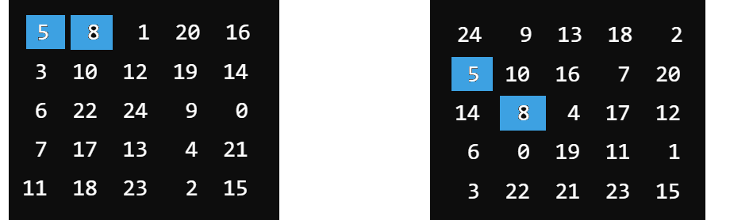
รูป: ตัวเลขถัดไปในเมทริกซ์ทางซ้ายมือ คือ 8 และนำไปอัปเดตสถานะของเมทริกซ์ทางขวามือ
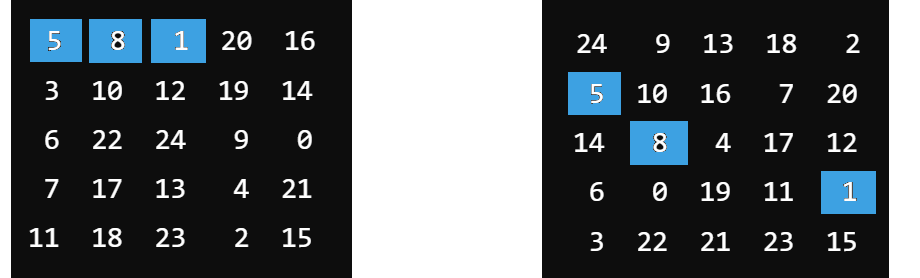
รูป: ตัวเลขถัดไปในเมทริกซ์ทางซ้ายมือ คือ 1 และนำไปอัปเดตสถานะของเมทริกซ์ทางขวามือ
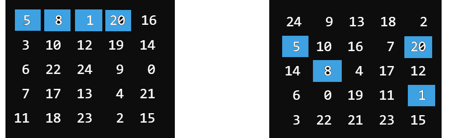
รูป: ตัวเลขถัดไปในเมทริกซ์ทางซ้ายมือ คือ 20 และนำไปอัปเดตสถานะของเมทริกซ์ทางขวามือ
ดังนั้นถ้าอ่านค่าจากตัวเลขไปตามลำดับ แต่ไม่เกินจำนวนตัวเลขที่กำหนดไว้ (แนะนำให้เลือกค่า จำนวนตัวเลขให้อยู่ระหว่าง 11..15) โอกาสที่จะเกิดกรณี BINGO ก็เป็นไปได้มากขึ้น
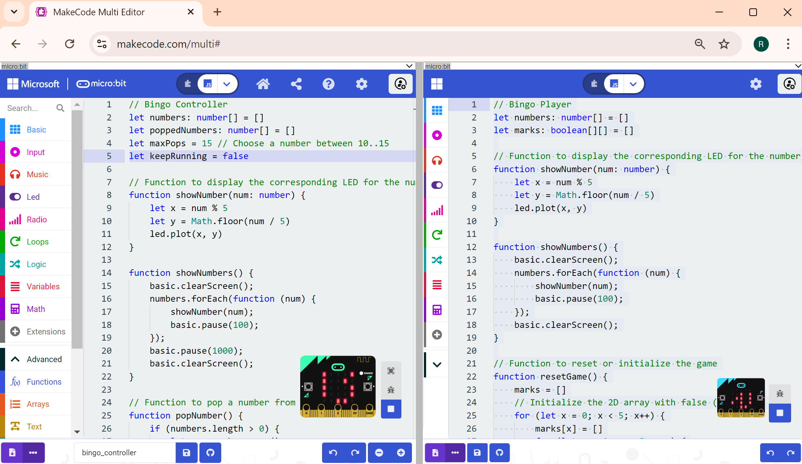
รูป: ตัวอย่างการจำลองการทำงาน (Simulator Mode)
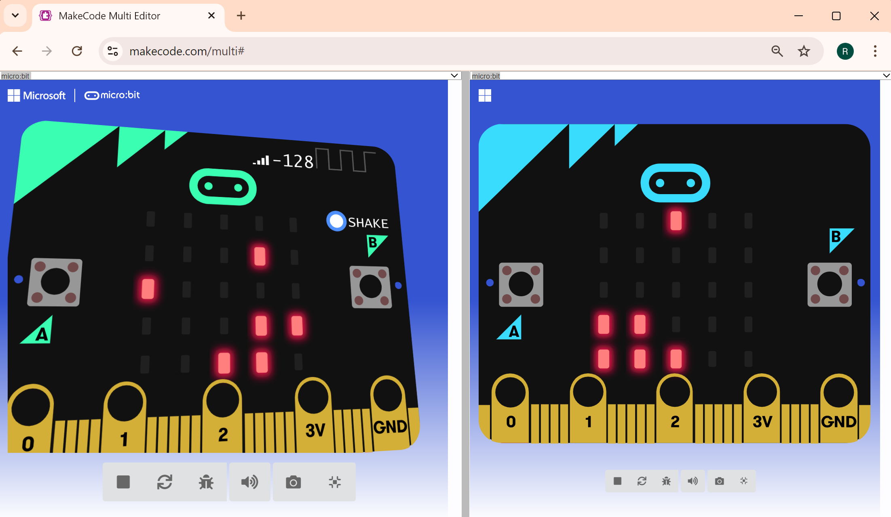
รูป: โหมดการจำลองการทำงานแบบ Fullscreen
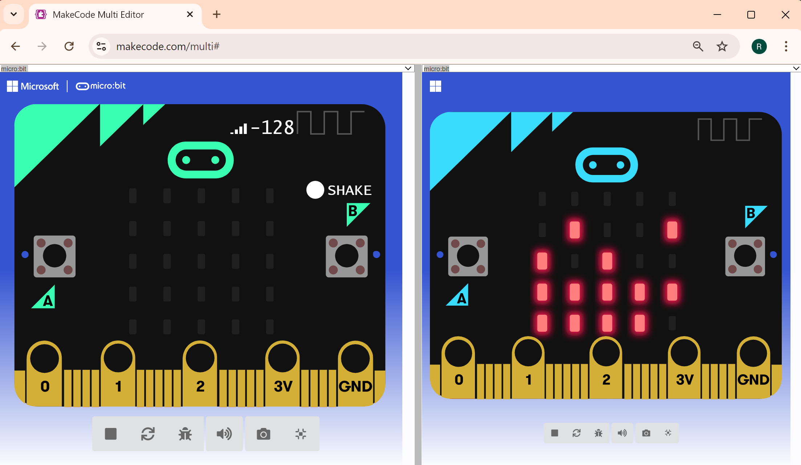
รูป: ตัวอย่างการเกิดกรณี BINGO
Code: Bingo Controller
// Bingo Controller
let numbers: number[] = []
let poppedNumbers: number[] = []
let maxPops = 15 // Choose a number between 10..15
let keepRunning = false
// Function to display the corresponding LED for the number
function showNumber(num: number) {
let x = num % 5
let y = Math.floor(num / 5)
led.plot(x, y)
}
function showNumbers() {
basic.clearScreen();
numbers.forEach(function (num) {
showNumber(num);
basic.pause(100);
});
basic.pause(1000);
basic.clearScreen();
}
// Function to pop a number from the list
function popNumber() {
if (numbers.length > 0) {
let n = numbers.pop()
poppedNumbers.push(n)
showNumber(n)
radio.sendNumber(n)
} else{
radio.sendNumber(-1) // Send reset command
}
}
function resetGame() {
keepRunning = false
basic.clearScreen()
radio.sendNumber(-1) // Send reset command
// Generate a new set of unique random numbers from 0 to 24
numbers = []
for (let i = 0; i < 25; i++) {
numbers.insertAt(0,i)
if (i % 2 == 1) {
numbers = numbers.sort(() => Math.random() - 0.5)
}
}
poppedNumbers = []
pause(1000)
showNumbers();
}
// Button A or shake to pop a number
input.onButtonPressed(Button.A, function () {
if (poppedNumbers.length < maxPops) {
popNumber()
} else {
resetGame()
}
})
input.onGesture(Gesture.Shake, function () {
keepRunning = !keepRunning
})
// Button B to reset the Bingo controller
input.onButtonPressed(Button.B, function () {
resetGame()
})
radio.onReceivedString( function (receivedString: String) {
if (receivedString == "BINGO") {
led.stopAnimation()
basic.clearScreen()
pause(500)
basic.showString("BINGO!")
pause(1000)
resetGame()
}
})
// Set the radio group
radio.setGroup(1)
// Show the let C for Bingo controller
basic.showString('C')
// Initialize the game
resetGame()
basic.forever( function() {
if (keepRunning) {
if (poppedNumbers.length < maxPops) {
popNumber()
pause(1000)
} else {
resetGame()
}
}
})
Code: Bingo Player
// Bingo Player
let numbers: number[] = []
let marks: boolean[][] = []
let bingo = false
// Function to display the corresponding LED for the number
function showNumber(num: number) {
let x = num % 5
let y = Math.floor(num / 5)
led.plot(x, y)
}
function showNumbers() {
basic.clearScreen();
numbers.forEach(function (num) {
showNumber(num);
basic.pause(100);
});
basic.clearScreen();
}
// Function to reset or initialize the game
function resetGame() {
basic.clearScreen()
marks = []
bingo = false
// Initialize the 2D array with false (5x5 grid)
for (let x = 0; x < 5; x++) {
marks[x] = []
for (let y = 0; y < 5; y++) {
marks[x][y] = false
}
}
numbers = []
for (let i = 0; i < 25; i++) {
numbers.insertAt(0, i)
if (i % 2 == 1) {
numbers = numbers.sort(() => Math.random() - 0.5)
}
}
showNumbers();
}
// Function to check for Bingo
function checkBingo(): boolean {
let complete: boolean
// Check rows for Bingo
for (let y = 0; y < 5; y++) {
complete = true
for (let x = 0; x < 5; x++) {
if (!marks[x][y]) {
complete = false
break
}
}
if (complete) {
return true
}
}
// Check columns for Bingo
for (let x = 0; x < 5; x++) {
complete = true
for (let y = 0; y < 5; y++) {
if (!marks[x][y]) {
complete = false
break
}
}
if (complete) {
return true
}
}
// Check diagonals for Bingo
let diag1Complete = true
let diag2Complete = true
for (let i = 0; i < 5; i++) {
// Check top-left to bottom-right diagonal
if (!marks[i][i]) {
diag1Complete = false
}
// Check top-right to bottom-left diagonal
if (!marks[4 - i][i]) {
diag2Complete = false
}
}
// Return true if any diagonal is complete
if (diag1Complete || diag2Complete) {
return true
}
// No Bingo found
return false
}
// Listen for numbers from the Bingo Controller
radio.onReceivedNumber(function (n: number) {
if (n == -1) { // reset command received
resetGame()
}
else if (numbers.indexOf(n) !== -1) {
let index = numbers.indexOf(n)
let x = index % 5
let y = Math.floor(index / 5)
marks[x][y] = true // Mark the number as found
led.plot(x, y) // Light the corresponding LED
// Check for Bingo
if (checkBingo() && !bingo) {
bingo = true
radio.sendString("BINGO")
for ( let i=0; i < 5; i++) {
led.setBrightness(0)
pause(250)
led.setBrightness(255)
pause(250)
}
basic.clearScreen()
basic.showString("BINGO!")
}
}
})
radio.onReceivedString(function (receivedString: String) {
if (!bingo && receivedString == "BINGO") {
basic.clearScreen()
resetGame()
}
})
// Set the radio group
radio.setGroup(1)
// Show the letter 'P' for Bingo player
basic.showString('P')
// Reset or initialize the game
resetGame()
▷ การทดสอบการทำงานกับบอร์ดไมโครบิต#
หากต้องการจะทดสอบการทำงานของโค้ดตัวอย่าง จะต้องมีบอร์ดไมโครบิตอย่างน้อย 2 บอร์ด และดาวน์โหลดโปรแกรมสำหรับ Bingo Controller และ Bingo Player แยกกัน แต่ถ้ามีมากกว่า 2 บอร์ด ก็เพิ่มจำนวน Bingo Players ได้
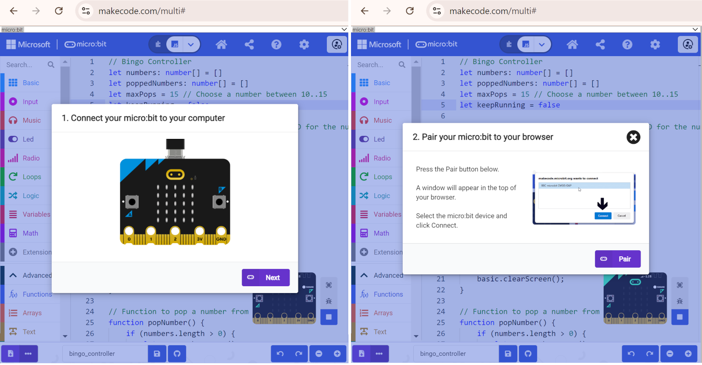
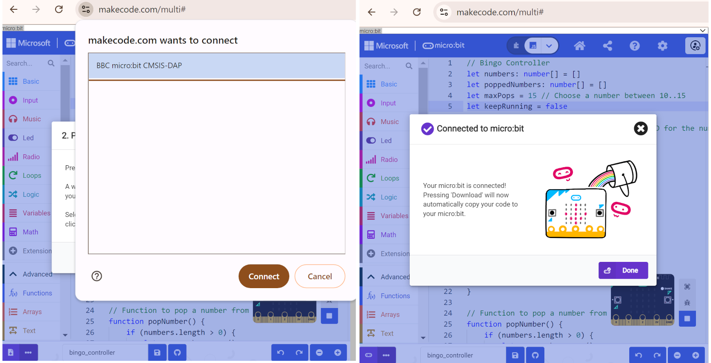
รูป: ตัวอย่างการจับคู่ (Device Pairing) เมื่อเชื่อมต่อคอมพิวเตอร์กับบอร์ดไมโครบิต ผ่านทางพอร์ต USB
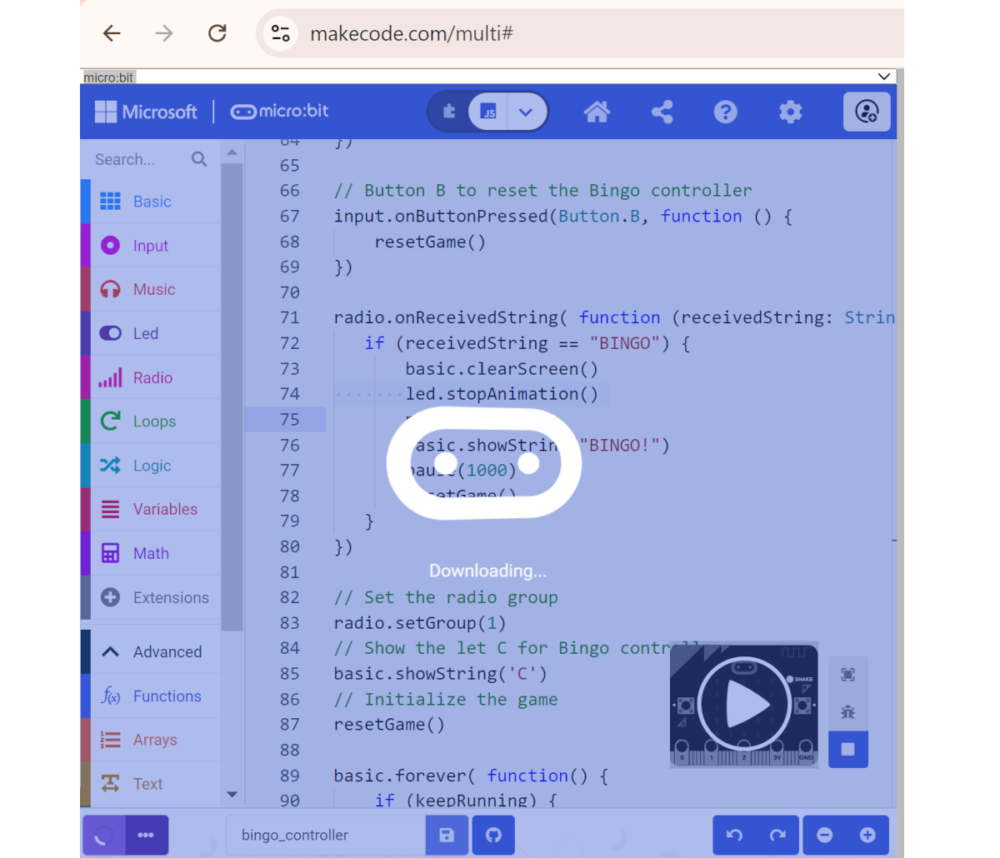
รูป: การดาวน์โหลดไฟล์โปรแกรมไปยังบอร์ดไมโครบิต
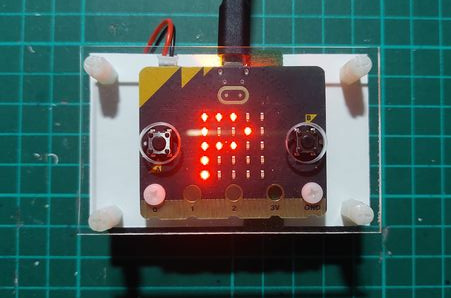
รูป: บอร์ดไมโครบิต แสดงตัวอักษร P ซึ่งหมายถึง BINGO Player
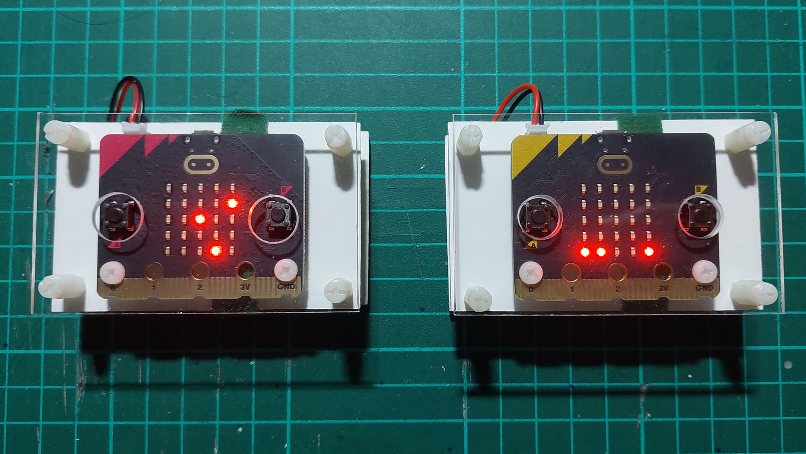
รูป: บอร์ดไมโครบิตจำนวน 2 บอร์ด แสดงสถานะ ON บนแผง LED Matrix (5x5) ซึ่งตรงกับตัวเลขที่มีการสุ่มเลือกมาได้ 3 ตัว ในขณะนั้น
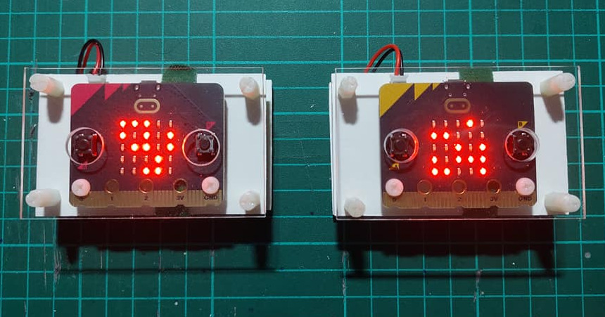
รูป: เมื่อได้การสุ่มเลือกตัวเลขมา 12 ตัว แต่ยังไม่ตรงกับเงื่อนไข BINGO
▷ กล่าวสรุป#
บทความนี้ได้นำเสนอ ตัวอย่างการเขียนโค้ดเพื่อสร้างเกมที่มีชื่อว่า Digital Bingo เพื่อนำไปทดลองใช้งานกับบอร์ด Micro:bit ซึ่งจะต้องมีอย่างน้อย 2 บอร์ด และเขียนโค้ดด้วยภาษา MakeCode JavaScript (JS)
บทความที่เกี่ยวข้อง
This work is licensed under a Creative Commons Attribution-ShareAlike 4.0 International License.
Created: 2024-09-28 | Last Updated: 2024-10-01